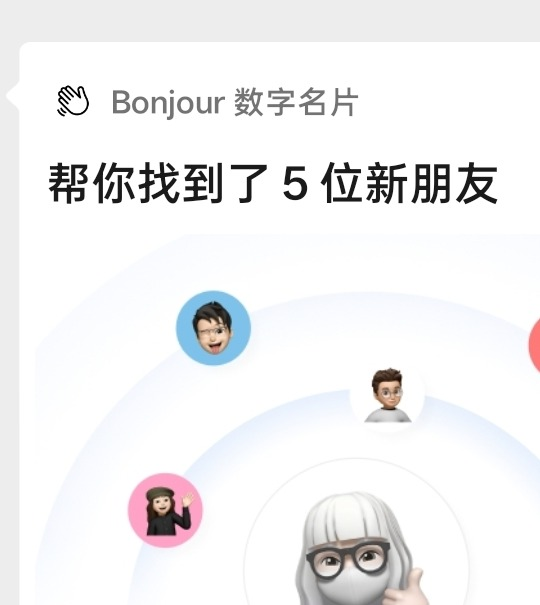

CASE 02 · 我的成果
我的职责 · 产品负责人
把对的人，推到彼此面前
我负责的业务
4
条业务线
作为产品负责人，从 0 定义产品形态、carry 多条业务。
AI Matching核心
Onboarding 优化已上线
BUiLD 2026 大会全程主导
找工地图 · 招聘业务线

Bonnie · 帮你找到 5 位新朋友
核心重点工作 · AI Matching
1
访谈确定匹配逻辑
大量深度用户访谈，确定时间地点实时匹配，服务两个关键场景：Coffee Chat 与 Cofounder Matching。
2
方案定 AI Matching 机制
以 Profile Quality Index 兜底质量，评分重点看画像与叙事的一致性；标签匹配 + 向量召回，低于门槛宁可不推。
3
实验A/B 推送验证
按数据判断需求，做 A/B test 逐步放量，用真实建联率检验每一次机制调整。
✓
结果建联率 14% → 20%+
每 100 次推送，多 6 次真实建联。同时带动了用户留存与高质量 profile 比例的提升。
一次真实的链接，胜过一百次推送
Bonjour! · 我的成果 · 02 / 03